File: 000900.gt.txt (if the image is defective, simply delete all Arabic text and the line will be excluded)
حضر « كتب الحكماء وما دونت العلماء من صنوف البلاغات والصناعات،
File: 000901.gt.txt (if the image is defective, simply delete all Arabic text and the line will be excluded)
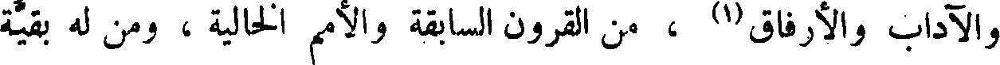
والآداب والإرفاق(1) ، من القرون السابقة والأمم الخالية ، ومن له بقية
File: 000902.gt.txt (if the image is defective, simply delete all Arabic text and the line will be excluded)
ومن لا بقية له ، أبقى ذكرا وأرفع قدرا وأكثر ردا ، لأن الحكمة أنفع
File: 000903.gt.txt (if the image is defective, simply delete all Arabic text and the line will be excluded)
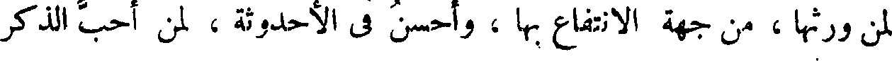
لمن ورثها ، من جهة الانتفاع بها ، وأحسن في الأحدوثة ، لمن أحب الذكر
File: 000904.gt.txt (if the image is defective, simply delete all Arabic text and the line will be excluded)
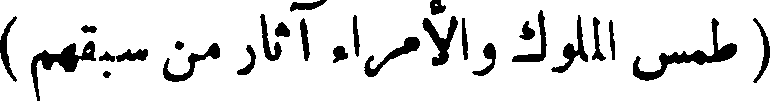
File: 000905.gt.txt (if the image is defective, simply delete all Arabic text and the line will be excluded)
الجميل » .
File: 000906.gt.txt (if the image is defective, simply delete all Arabic text and the line will be excluded)
والكتب بذلك أولى من بنيان الحجارة وحيطان المدر ؛ لأن من
File: 000907.gt.txt (if the image is defective, simply delete all Arabic text and the line will be excluded)
شأن الملوك أن يطمسوا على آثار من قبلهم ، وأن يميتوا ذكر أعدائهم،
File: 000908.gt.txt (if the image is defective, simply delete all Arabic text and the line will be excluded)
فقد هدموا بذلك السبب [ أكثر ] المدن وأكثر الحصون ، كذلك كانوا
File: 000909.gt.txt (if the image is defective, simply delete all Arabic text and the line will be excluded)
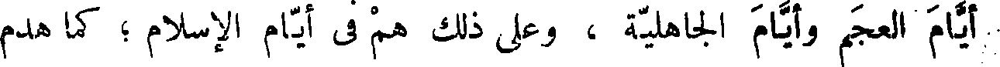
أيام العجم وأيام الجاهلية ، وعلى ذلك هم فى أيام الإسلام ؛ كما هدم
File: 000910.gt.txt (if the image is defective, simply delete all Arabic text and the line will be excluded)
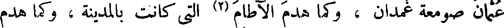
عثمان صومعة غمدان ، وكما هدم الآطام (2) التى كانت بالمدينة ، وكما هدم
File: 000911.gt.txt (if the image is defective, simply delete all Arabic text and the line will be excluded)
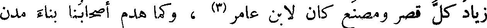
زياد كل قصر ومصنع كان لابن عامر (3) ، وكما هدم أصحابنا بناء مدن
File: 000912.gt.txt (if the image is defective, simply delete all Arabic text and the line will be excluded)
الشامات (4) لبنى مروان .
File: 000913.gt.txt (if the image is defective, simply delete all Arabic text and the line will be excluded)
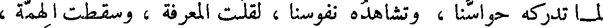
لما تدركه حواسنا ، وتشاهده نفوسنا ، لقلت المعرفة ، وسقطت الهمة ،
File: 000914.gt.txt (if the image is defective, simply delete all Arabic text and the line will be excluded)
وارتفعت العزيمة ، وعاد الرأى عقيما ، والخاطر فاسدا ؛ ولكل الحد
File: 000915.gt.txt (if the image is defective, simply delete all Arabic text and the line will be excluded)
( أشرف الكتب )
File: 000916.gt.txt (if the image is defective, simply delete all Arabic text and the line will be excluded)
وتبلد العقل .
File: 000917.gt.txt (if the image is defective, simply delete all Arabic text and the line will be excluded)
File: 000918.gt.txt (if the image is defective, simply delete all Arabic text and the line will be excluded)
الله تعالى ، فيها الهدى والرحمة ، والإخبار عن كل حكمة ، وتعريف كل سيئة
File: 000919.gt.txt (if the image is defective, simply delete all Arabic text and the line will be excluded)
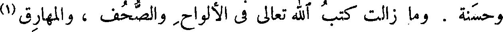
وحسنة . وما زالت كتب الله تعالى فى الألواح والصحف ، والمهارق (1)
File: 000920.gt.txt (if the image is defective, simply delete all Arabic text and the line will be excluded)
والمصاحف . وقال الله عز وجل ( الم ذلك الكتاب لا ريب فيه ) .
File: 000921.gt.txt (if the image is defective, simply delete all Arabic text and the line will be excluded)
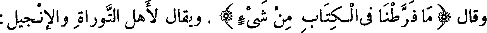
وقال ( ما فرطنا فى الكتاب من شيء) ، ويقال لأهل التوراة والإنجيل :
File: 000922.gt.txt (if the image is defective, simply delete all Arabic text and the line will be excluded)
( مواصلةالسير فى خدمة العلم )
File: 000923.gt.txt (if the image is defective, simply delete all Arabic text and the line will be excluded)
أهل الكتاب .
File: 000924.gt.txt (if the image is defective, simply delete all Arabic text and the line will be excluded)
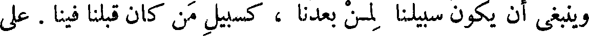
وينبغى أن يكون سبيلنا لمن بعدنا ، كسبيل من كان قبلنا فينا . على
File: 000925.gt.txt (if the image is defective, simply delete all Arabic text and the line will be excluded)
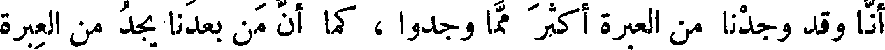
أنا وقد وجدنا من العبرة أكثر مما وجدوا ، كما أن من بعدنا يجد من العبرة
File: 000926.gt.txt (if the image is defective, simply delete all Arabic text and the line will be excluded)
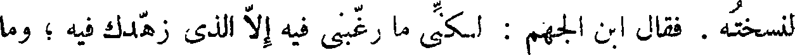
لنسخته . فقال ابن الجهم : لكنى ما رغبنى فيه إلا الذى زهدك فيه ؛ وما
File: 000927.gt.txt (if the image is defective, simply delete all Arabic text and the line will be excluded)
قرأت قط كتابا كبيرا فأخلانى من فائدة ، وما أحصى كم قرأت من صغار
File: 000928.gt.txt (if the image is defective, simply delete all Arabic text and the line will be excluded)
الكتب فخرجت منها كما دخلت .
File: 000929.gt.txt (if the image is defective, simply delete all Arabic text and the line will be excluded)
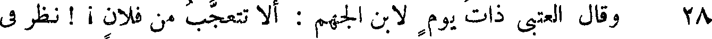
To Save: `Ctrl+s`, make sure to choose `Webpage, complete`!